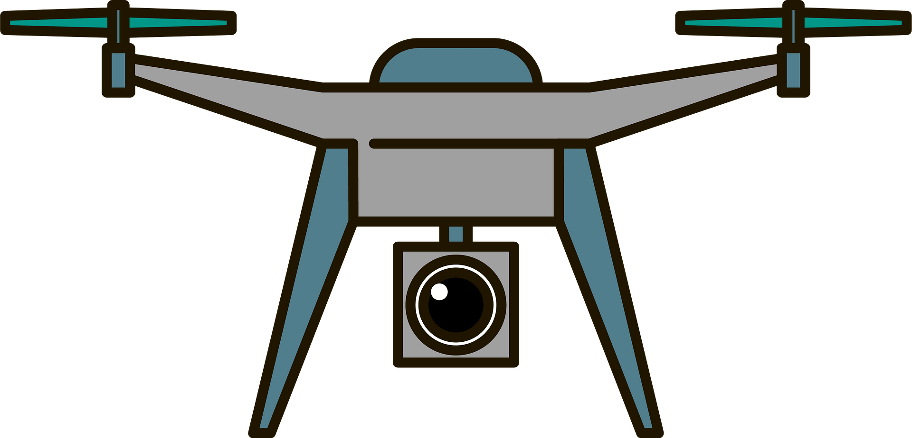
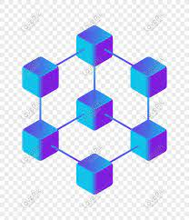
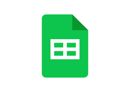

<html lang="en">

  </html><html><head>
    <link rel="stylesheet" href="https://fonts.googleapis.com/icon?family=Material+Icons">
      <meta charset="UTF-8">
      <title>Arya Tandon</title>
      <link rel="stylesheet" href="https://use.fontawesome.com/releases/v5.0.10/css/all.css" integrity="sha384-+d0P83n9kaQMCwj8F4RJB66tzIwOKmrdb46+porD/OvrJ+37WqIM7UoBtwHO6Nlg" crossorigin="anonymous">
      <link href="https://fonts.googleapis.com/css?family=Source+Sans+Pro:light|Playfair+Display" rel="stylesheet">
      <link rel="stylesheet prefetch" href="https://cdnjs.cloudflare.com/ajax/libs/twitter-bootstrap/4.0.0-alpha.6/css/bootstrap.min.css">
      <link rel="shortcut icon" type="image/png" href="images/favicon.png">
      <link href="https://fonts.googleapis.com/css?family=IBM+Plex+Serif:100,200,300,400,700" rel="stylesheet">
  
      <link rel="stylesheet" href="https://cdn.jsdelivr.net/npm/bootstrap@4.3.1/dist/css/bootstrap.min.css" integrity="sha384-ggOyR0iXCbMQv3Xipma34MD+dH/1fQ784/j6cY/iJTQUOhcWr7x9JvoRxT2MZw1T" crossorigin="anonymous">
      <link rel="stylesheet" href="css/html5reset.css">
      <link rel="stylesheet" href="css/regStyle.css">
      <script src="https://code.jquery.com/jquery-3.3.1.slim.min.js" integrity="sha384-q8i/X+965DzO0rT7abK41JStQIAqVgRVzpbzo5smXKp4YfRvH+8abtTE1Pi6jizo" crossorigin="anonymous"></script>
      <script src="https://cdn.jsdelivr.net/npm/popper.js@1.14.7/dist/umd/popper.min.js" integrity="sha384-UO2eT0CpHqdSJQ6hJty5KVphtPhzWj9WO1clHTMGa3JDZwrnQq4sF86dIHNDz0W1" crossorigin="anonymous"></script>
      <script src="https://cdn.jsdelivr.net/npm/bootstrap@4.3.1/dist/js/bootstrap.min.js" integrity="sha384-JjSmVgyd0p3pXB1rRibZUAYoIIy6OrQ6VrjIEaFf/nJGzIxFDsf4x0xIM+B07jRM" crossorigin="anonymous"></script>
    </head>
  <body>
    <div class="skip"><a href="Hobbies.html">Skip to Main Content</a></div>
    <!-- navbar -->
<!--  
	<nav>
		<ul>
			<li><a href = "Description.html" >bio</a></li>
			<li class="active"><a href = "Proj.html">projects</a></li>
			<li class = "home">Arya Tandon</a></li>
			<li><a href = "https://drive.google.com/file/d/14vXxWiphqEI_vC23zLBITcDqtfTljSBN/view">resume</a></li>
			<li><a href = "Hobbies.html">contact</a></li>
		</ul>
	</nav> -->


	<nav class="navbar navbar-expand-lg navbar-dark bg-dark">
		<a class="navbar-brand" href="#">Menu</a>
		<button class="navbar-toggler" type="button" data-toggle="collapse" data-target="#navbarSupportedContent" aria-controls="navbarSupportedContent" aria-expanded="false" aria-label="Toggle navigation">
		  <span class="navbar-toggler-icon"></span>
		</button>
	  
		<div class="collapse navbar-collapse" id="navbarSupportedContent">
		  <ul class="navbar-nav mr-auto">
			<li class="nav-item">
			  <a class="nav-link" href="Description.html">bio <span class="sr-only">(current)</span></a>
			</li>
			<li class="nav-item active">
			  <a class="nav-link" href="Proj.html">projects</a>
			</li>
			<li class="nav-item">
				<a class="nav-link" href="https://drive.google.com/file/d/14vXxWiphqEI_vC23zLBITcDqtfTljSBN/view">resume</a>
			 </li>
			<li class="nav-item">
				<a class="nav-link" href="Hobbies.html">contact</a>
			 </li>
	  
			<!-- <li class="nav-item">
			  <a class="nav-link disabled" href="#" tabindex="-1" aria-disabled="true">Disabled</a>
			</li> -->
		  </ul>
      <form class="form-inline my-2 my-lg-0">
        <input class="form-control mr-sm-2" type="search" placeholder="Search" aria-label="Search">
        <!-- <button class="navbar-toggler" data-bs-toggle="collapse" data-bs-target="#navbar">
          <span class="navbar-toggler-icon"></span>
        </button>		   -->
      </form>
		</div>
	  </nav>

    
    <main>
    <!-- end navbar -->
    <section id="projects" class="projects">
        <div class="container">
    
         <div class="row1">
            <div class="col" data-wow-duration="1.4s">
              <div class="box">
                <div class="gridImg">
                <div class="img">  </div>
                <div class="img">  </div>
                <div class="img">  </div>
                </div>
              <br> <p>NBA MVP Predictor</p>  <br> 

              <a class="icons hvr-grow" href="https://github.com/aryatandon1" aria-label="first link">
				<i class="fab fa-github fa-lg"></i></a>

                <br><p><br>
                    Created machine learning model to predict NBA Most Valuable Player voting for future seasons, training the
                    model on historic league data by year from 1991 to present day.
                </p>
              </div>
            </div>

            <div class="col" data-wow-duration="1.4s">
              <div class="box">
                <div class="gridImg">
                <div class="img">  </div>
                <div class="img">  </div>
                <div class="img">  </div>
            </div>
                <br> <p>Drone Path Simulator</p>  <br>
                <a class="icons hvr-grow" href="https://github.com/aryatandon1" aria-label="sec link">
                    <i class="fab fa-github fa-lg"></i></a>
                    <br><p><br>
                    Simulated delivery drone’s path given coordinates, emulating the Traveling Salesman Problem.
                    Generated 3 possible paths implementing Prim’s, random insertion (greedy), and Branch Bound algorithms.             </p>
              </div>
            </div>

                <div class="col" data-wow-duration="1.4s">
              <div class="box">
                <div class="gridImg">
                <div class="img">  </div>
                <div class="img">  </div>
                <div class="img">  </div>
                </div>
                <br> <p>Pyscanner</p> <br>
                <a class="icons hvr-grow" href="https://github.com/aryatandon1" aria-label="third link">
                    <i class="fab fa-github fa-lg"></i></a>
    
                <br><p> <br>     Automated attendance system for Leland High School Debate Team (300 students), implementing a Python
application that scans student IDs, tabulates their check-in/check-out times, and identifies absences.
                </p>
              </div>
            </div>

          <!-- <div class="row">
    
            <div class="col-md-6 col-lg-4" data-wow-duration="1.4s">
              <div class="box">
                <div class="img">  </div>
                <h4 class="title"><a href="https://github.com/ktp-dev/ktpwebsiteV2.0" target="_blank"><i class="fa fa-github"></i></a> KTP Website <a href='http://kappathetapi.com' target="_blank"><i class="fa fa-external-link" aria-hidden="true"></i> </a></h4>
                <p>
                    I am the Website Committee Lead for Kappa Theta Pi and helped build our new website from scratch. This was my first experience with web development, and I found it enjoyable and learned a lot. Ultimately, the time spent on this project helped me considerably when building out this personal website
                </p>
              </div>
            </div>

            
    
            <div class="col-md-6 col-lg-4" data-wow-duration="1.4s">
                <div class="box">
                    <div class="img">  </div>
                    <h4 class="title">Pursu <a href='http://pursu.dev' target="_blank"><i class="fa fa-external-link" aria-hidden="true"></i> </a></h4>
                    <p>
                        Pursu is a productivity enhancement tool designed to help students streamline and get the most out of their tech recruiting journey. The web-app keeps track of all the companies a user is recruiting with automatically by scraping their email and displays relevant information on their personalized dashboard
                    </p>
                </div>
            </div>
    
            <div class="col-md-6 col-lg-4" data-wow-duration="1.4s">
                <div class="box">
                    <div class="img">  </div>
                    <h4 class="title"><a href="https://github.com/admuchoor/msas_hackathon" target="_blank"><i class="fa fa-github"></i></a> MSAS Hackathon </h4>
                    <p>
                        At the MSAS Hackathon, I worked with a real-world dataset provided by Michigan Athletics and built a machine learning model to predict point differential based on the players’ workloads throughout the game. This was my first taste of machine learning and it set the foundation for my continued exploration of this field
                    </p>
                </div>
            </div>
          </div> -->
        </div>
      </div></section>
    </main>
      <div class="footer">
        Last Updated 2022-11-28T07:04:35+0000 (November 23, 2022 7:04PM PST)
        <br> <br>
      Made with <i class="material-icons">keyboard</i> and <i class="material-icons">mouse</i>
      <br> <br>
        Copyright © 2022 Arya Tandon
      </div>
  
  </body><div id="__genieContainer" style="all: initial;"></div></html>